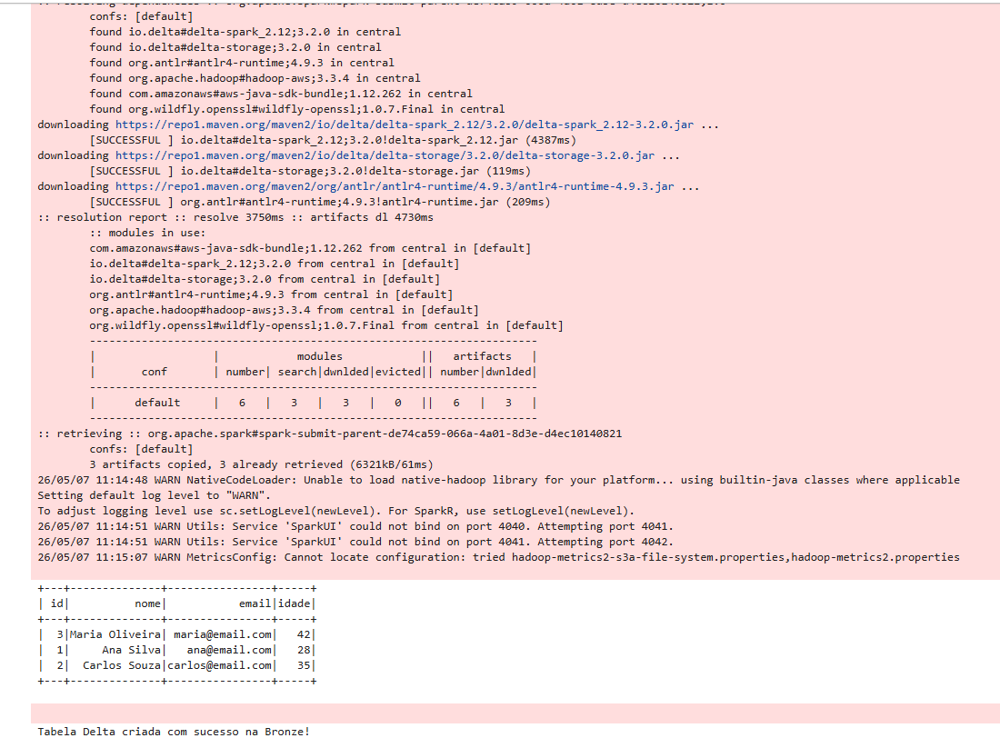
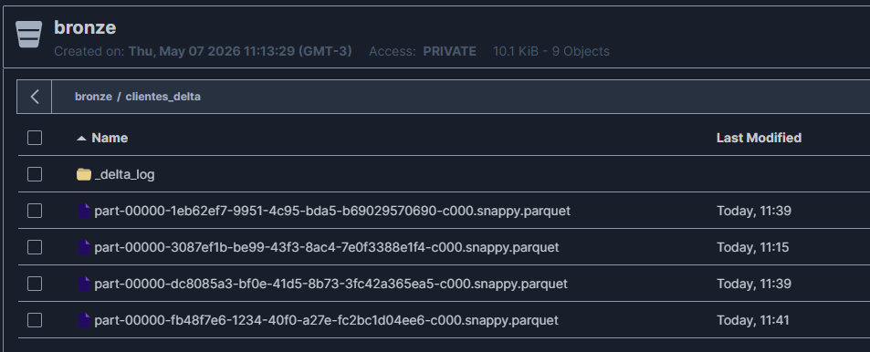

Requisito 2: Conversão de CSV para Delta Lake (Camada Bronze)
O que foi solicitado
"Após a extração, vocês deverão ler os arquivos CSV ou JSON do bucket 'landing-zone' e gravar no formato DELTA LAKE em um novo bucket chamado 'bronze’."
Nossa Implementação
A segunda etapa do pipeline atua no processamento e estruturação dos dados que foram previamente ingeridos de forma crua. Para isso, nosso script PySpark atua como ponte de ETL realizando as seguintes ações:
- Leitura da Origem: Recupera o arquivo
CSVgerado na etapa anterior que está hospedado dentro do bucketlanding-zonedo MinIO. - Setup do Delta: Inicializa as extensões analíticas do Spark configurando o suporte total ao Delta Lake, responsável por gerenciar logs transacionais no Object Storage.
- Escrita na Camada Seguinte: Grava esse mesmo DataFrame em um novo bucket chamado
bronze, alterando explicitamente o formato de saída para Delta (Parquet + _delta_log).
Evidências de Execução (Prints)
Para comprovar a transformação do dado e o isolamento das camadas no MinIO, confira os registros abaixo:
Código de Conversão Rodando com Sucesso

Persistência no MinIO (Bucket Bronze) em Formato Delta
